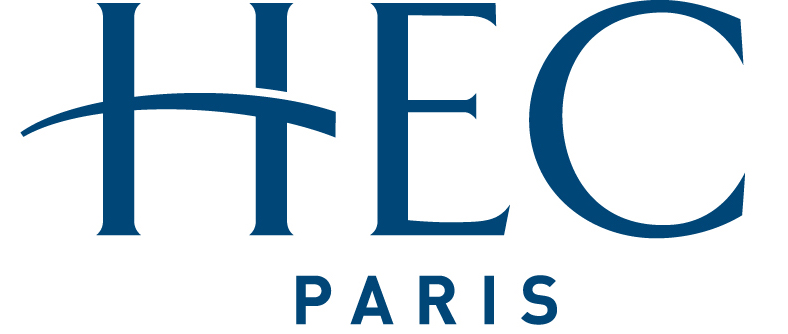

Qui suis-je?
Salut! Je m'appelle Pierre, je suis un étudiant d'HEC et j'apprend à coder!
J'ai 20 ans et je viens de Cherbourg en Normandie. J'ai intégré HEC après deux années de classe préparatoire à Rennes.
Musique
J'écoute beaucoup de musique, surtout du rap. J'aime beaucoup Dinos, Drake, Nemir. Je vais régulièrement à des concerts ou des festivals, j'adore l'ambiance.
Découvrez mon profil spotifySports
Je pratique le basket-ball au BCH, le club d'HEC. Je joue au poste d'arrière.
En plus de cela, j'aime beaucoup le football, j'en ai fait en club quand j'étais petit. Aujourd'hui j'ai arrêté mais je continue de jouer avec mes amis et je supporte Manchester United. J'aime par exemple beaucoup des joueurs comme Ryan Giggs ou Paul Pogba.
Mes études
J'ai un Bac ES, que j'ai obtenu au lycée Victor Grignard à Cherbourg. Après cela, j'ai fait deux ans de classe préparatoire au lycée Châteaubriand à Rennes. Suite à ces deux ans j'ai intégré HEC Paris.
- 
Mes associations
A HEC, je suis membre de plusieurs associations :
HEC Positive Restructuring
HEC Positive Restructuring est une association de conseil bénévole aux entreprises et aux collectivités. Elle s'occupe de missions dites "à impact", c'est-à-dire à but social ou environnemental. Nous comptons plus de 35 membres et travaillons sur les missions par groupes de 5. C'est une expérience vraiment enrichissante.

HEstreet
HEStreet est l'association de rap et culture urbaine de l'école. Nous organisons des événements en lien avec cet univers, des concerts par exemple. En plus de cela, nous publions du contenu sur les réseaux sociaux en partageant des playlists, des articles sur des albums ou des artistes.
-
Suivez-nous sur les réseaux sociaux!
Décentralis'HEC
Décentralis'HEC est une association toute jeune sur le campus d'HEC. Cette association part du constat que la majorité des élèves du programme ont étudié en région parisienne, aussi elle vise à lutter contre une auto-censure des élèves de province.